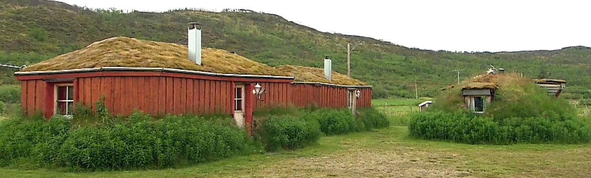

L'Architecture Sami
L’architecture des Samis a beaucoup évolué au fil des siècles. La Finlande rassemble beaucoup d’architectes qui proposent d’innovants projets comme ceux d’Alvar Aalto qui fait de la Laponie un modèle urbaniste et architectural. L'architecture se caractérise généralement par l’utilisation fondamentale de constructions en bois. En effet, l’utilisation sinéquanone du bois est répandue dans tous les pays scandinaves depuis la Préhistoire. La plus ancienne structure connue est le kota ou goahti, une hutte ou une tente avec un revêtement en tissu, de la mousse et du bois.
Les habitats dans le temps
La goahti est la hutte traditionnelle des Samis, la structure principale est constitué de deux troncs d’arbre en forme d’arc (cette poutre est appellé bealljegoahti en sami, elle est pliée près de la racine pour qu’elle pousse en arc). Tout le cadre est recouvert de troncs d’arbre et ensuite de mousse et d’herbe. L’intérieur de la goahti est séparé en plusieurs pièces grâce à des pierres et des bûches. C’est par conséquent un habitat durable qui s’éternise dans le temps de par sa solidité.
Et aujourd'hui ?
Aujourd’hui, les maisons Samis sont plus évoluées. Elles ressemblent davantage aux maisons du reste de la région, mais gardent des apparences des goahtis comme la présence de la mousse en guise de toit car celle-ci est très efficace pour l’isolation thermique. Certaines habitations préservent encore aujourd’hui la forme d’un igloo et les matériaux utilisés sont entièrement naturels.
